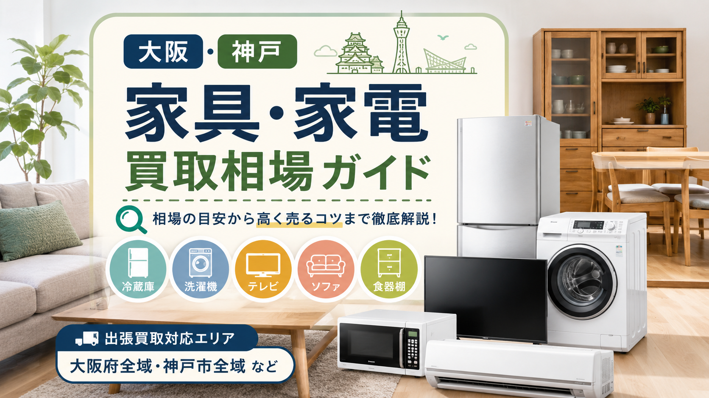

PRICE GUIDE / OSAKA & KOBE
大阪・神戸で冷蔵庫・洗濯機・テレビ・電子レンジ・エアコン・ソファ・ダイニング・ベッド・食器棚など、家具家電を売るときの買取相場の目安を主要品目別にまとめました。査定で見られるポイント、高く売るコツ、出張買取と店頭買取の使い分けまで、売る前に押さえておきたい知識を解説します。

引っ越し、買い替え、実家整理、遺品整理などで家具や家電を手放すとき、「どれくらいの価格で売れるのか」は多くの方が気になるポイントです。
大阪・神戸エリアは人口が多く、中古家具・中古家電の需要も比較的高い地域です。特に大阪市内、堺市、豊中市、吹田市、東大阪市、神戸市、尼崎市、西宮市、芦屋市、明石市周辺では、単身者向けの家電やファミリー向け家具の需要があります。
ただし、家具・家電の買取価格は、購入時の価格だけで決まるわけではありません。年式、状態、メーカー、サイズ、搬出のしやすさ、再販売しやすいデザインかどうかによって大きく変わります。
この記事では、大阪・神戸で家具・家電を売るときの買取相場、査定で見られるポイント、高く売るための準備についてわかりやすく解説します。
家電は、家具に比べて年式が重視されやすい品目です。一般的には製造から5年以内のものが買取対象になりやすく、10年以上経過している家電は買取が難しい場合もあります。
特に冷蔵庫、洗濯機、電子レンジ、テレビ、エアコンなどは、単身者や新生活需要があるため、大阪・神戸エリアでも比較的需要があります。
冷蔵庫は、容量と年式によって査定額が大きく変わります。
単身用の小型冷蔵庫は、状態が良ければ数千円程度の買取になることがあります。一方、ファミリー向けの大型冷蔵庫で、国内有名メーカー、年式が新しく、外観や庫内がきれいなものは、数万円以上の査定になることもあります。目安としては以下の通りです。
冷蔵庫は庫内のにおい、汚れ、棚の割れ、ゴムパッキンの劣化も査定に影響します。売る前に庫内を清掃しておくと印象が良くなります。
洗濯機も年式が重要です。特にドラム式洗濯乾燥機は中古市場で人気があり、高年式で状態が良ければ高価買取が期待できます。目安としては以下の通りです。
洗濯機は、槽のにおい、排水ホースの汚れ、外装のへこみ、動作音などが確認されます。付属品として給水ホース、排水ホース、輸送用ボルトなどが残っていると査定時に有利です。
テレビはサイズ、年式、メーカー、4K対応かどうかによって相場が変わります。目安としては以下の通りです。
リモコン、電源コード、B-CASカード、説明書、スタンド部品などが揃っていると査定がスムーズです。画面割れ、液晶の線、映像のちらつきがある場合は買取が難しくなることがあります。
電子レンジやオーブンレンジは、単身者需要があるため、状態が良ければ買取対象になりやすい家電です。目安としては以下の通りです。
庫内の焦げ、におい、油汚れが強い場合は査定額が下がりやすくなります。売る前に庫内を拭き掃除しておきましょう。
エアコンは、年式、畳数、メーカー、取り外し状況によって相場が変わります。大阪・神戸では夏前に需要が高まりやすく、時期によって査定額が変わることもあります。目安としては以下の通りです。
エアコンは取り外し工事が必要になるため、買取店によって対応可否や費用が異なります。依頼前に「取り外しも対応しているか」「取り外し費用がかかるか」を確認しておくと安心です。
家具は家電と違い、年式よりもデザイン、ブランド、状態、搬出のしやすさが重視されます。
大阪・神戸では、マンションや戸建てからの出張買取依頼が多く、大型家具の買取相談も少なくありません。ただし、大型家具は搬出作業や再販売スペースの問題があるため、すべてが高く売れるわけではありません。
ソファは、ブランド、サイズ、素材、状態によって大きく価格が変わります。目安としては以下の通りです。
ソファは汚れ、へたり、破れ、ペットの毛、においが査定に影響します。布製ソファは使用感が出やすいため、状態が良いものほど評価されやすくなります。
ダイニングテーブルは、サイズ、素材、椅子の有無、ブランドによって査定額が変わります。目安としては以下の通りです。
テーブル天板の傷、輪じみ、椅子のぐらつき、座面の汚れなどが確認されます。椅子が揃っているセット品は、単品よりも再販売しやすいため査定で有利になることがあります。
ベッドはフレームのみであれば買取対象になることがありますが、マットレスは衛生面の理由で買取が難しい場合もあります。目安としては以下の通りです。
マットレスはシミ、へたり、におい、使用年数が厳しく見られます。高級ブランドのマットレスでも、状態によっては買取不可になることがあります。
食器棚や収納家具は、大型で搬出が大変なため、サイズや搬出経路が査定に影響します。目安としては以下の通りです。
大型家具は、エレベーターの有無、階段作業、分解の必要性によって対応が変わることがあります。査定依頼時には、設置場所や搬出経路を伝えておくとスムーズです。
大阪・神戸エリアで高く売れやすいのは、再販売しやすい家具・家電です。特に以下のような品物は需要があります。
大阪市内や神戸市内は単身者の引っ越し需要も多いため、冷蔵庫、洗濯機、電子レンジ、テレビなどの家電セットは比較的売れやすい傾向があります。
家具・家電は、状態によって査定額が大きく変わります。次のような場合は、買取価格が下がる、または買取不可になることがあります。
特に家電は、安全性や再販売後の保証の問題もあるため、古いものは値段がつきにくくなります。家具は見た目の印象が重要なため、目立つ汚れや破損があると査定に影響します。
大阪・神戸で家具・家電を少しでも高く売りたい場合は、査定前の準備が大切です。
冷蔵庫の庫内、洗濯機の外装、電子レンジの庫内、家具の表面などは、簡単に掃除しておくだけでも印象が変わります。
新品同様にする必要はありませんが、ほこり、食品汚れ、油汚れ、髪の毛、ペットの毛などはできるだけ取り除いておきましょう。
家電の場合、リモコン、説明書、保証書、電源コード、ホース類、アダプターなどがあると査定がスムーズです。
家具の場合も、棚板、ネジ、予備パーツ、組み立て説明書などが残っていれば一緒に用意しておくと良いでしょう。
家電の査定では、型番と製造年が重要です。冷蔵庫や洗濯機の場合、本体の側面や扉の内側に型番シールが貼られていることが多いです。事前に型番や製造年を伝えることで、概算査定が出しやすくなります。
家具や家電を1点だけ依頼するよりも、複数点まとめて依頼した方が出張買取の効率が良くなります。引っ越しや実家整理などで複数の品物を手放す場合は、冷蔵庫、洗濯機、テレビ、家具、小型家電などをまとめて相談すると良いでしょう。
家具・家電を売る方法には、主に出張買取と店頭買取があります。
出張買取は、買取業者が自宅まで来て査定・引き取りを行う方法です。大型家具や大型家電を売りたい場合に便利です。
大阪・神戸ではマンションや戸建てからの依頼も多く、冷蔵庫、洗濯機、ソファ、食器棚などをまとめて売りたい場合に向いています。
出張買取のメリットは、自分で運ぶ必要がないことです。一方で、品物の内容や地域によっては出張対応が難しい場合もあります。
店頭買取は、自分で店舗に品物を持ち込んで査定してもらう方法です。小型家電や雑貨、ブランド品などには向いています。
ただし、大型家具や大型家電は運搬が大変なため、車や人手が必要になります。大型品を売る場合は、出張買取の方が現実的です。
大阪・神戸で出張買取を依頼する際は、事前に確認しておきたいポイントがあります。
まず、出張費や査定費がかかるかどうかを確認しましょう。業者によっては無料の場合もありますが、地域や内容によって費用が発生することもあります。
次に、買取できない品物がある場合の対応も確認しておくと安心です。買取不可の品物をそのまま置いていくのか、有料で回収できるのかによって、片付けの進め方が変わります。
また、大型家具や家電の場合は、搬出経路の確認も重要です。階段作業、エレベーターの有無、駐車スペースの有無などを事前に伝えておくと、当日のトラブルを防ぎやすくなります。
家具・家電の買取相場は、同じ商品でも状態やタイミングによって変わります。
たとえば、同じ冷蔵庫でも、製造年が新しく、庫内がきれいで、人気メーカーのものであれば高く評価されやすくなります。一方、年式が古い、傷が多い、においが強い、搬出が難しい場合は、相場より低くなることもあります。
そのため、相場表だけで判断するのではなく、実際に査定を受けて確認することが大切です。
大阪・神戸で家具・家電を売る場合、家電は年式、家具は状態やデザインが査定の大きなポイントになります。
冷蔵庫、洗濯機、テレビ、電子レンジ、エアコンなどの生活家電は、年式が新しく状態が良ければ買取対象になりやすい品目です。ソファ、ダイニングテーブル、収納家具などの家具は、ブランドやデザイン、搬出のしやすさによって査定額が変わります。
少しでも高く売るためには、査定前に掃除をしておくこと、付属品を揃えること、型番や年式を確認しておくこと、複数点まとめて依頼することが大切です。
引っ越し、買い替え、実家整理、遺品整理などで家具・家電を手放す場合は、まずは出張買取で相談してみるとスムーズです。大阪・神戸エリアでは中古需要もあるため、状態の良い品物は思わぬ価格がつくこともあります。
家具・家電・家まるごと、しっかり高く。LINEで写真を送るだけで仮査定OK。
最短即日でお伺いします。査定無料・キャンセル料無料。